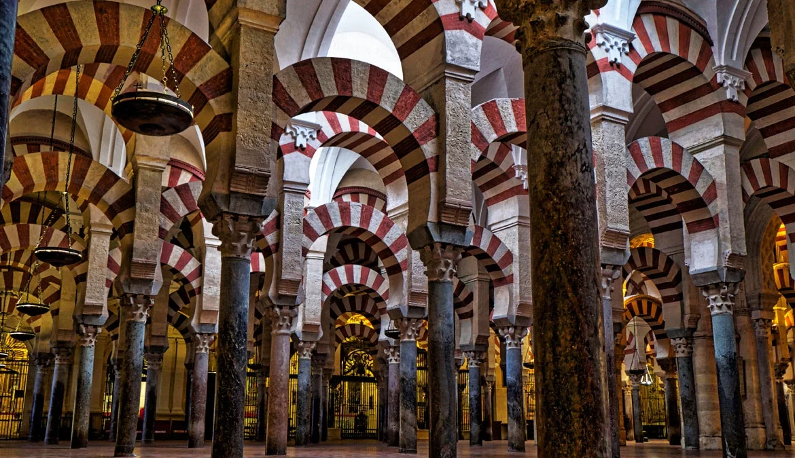
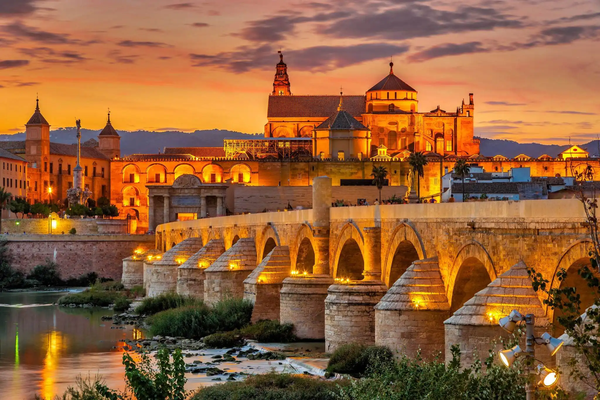
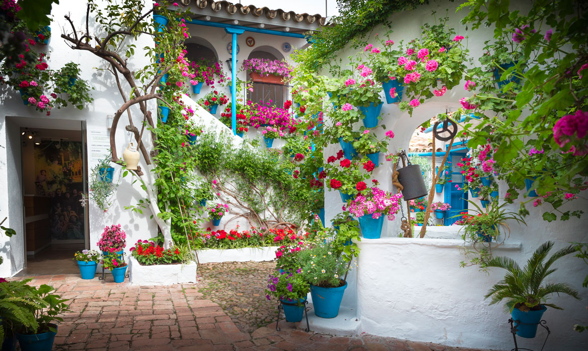

Situada en el corazón de Andalucía, es una ciudad llena de historia, arte y
tradición.
Su impresionante Mezquita-Catedral es uno de los monumentos más emblemáticos de España.
El Puente Romano y su casco histórico nos transportan a la época de romanos y califas.
Sus patios llenos de flores, sus calles estrechas y su gastronomía reflejan su esencia andaluza.
Córdoba es un lugar único donde conviven culturas y donde cada rincón guarda una historia.
Lugares imprescindibles

Mezquita-Catedral
La Mezquita-Catedral de Córdoba es una joya arquitectónica declarada
Patrimonio de la Humanidad por la UNESCO, famosa por sus arcos de herradura y sus columnas de mármol.
Construida como mezquita en el siglo VIII, fue convertida en catedral cristiana en el siglo XIII,
convirtiéndose en un símbolo de la historia y la riqueza cultural de Córdoba.

Puente Romano
El Puente Romano de Córdoba fue construido en el siglo I a. C. sobre el río
Guadalquivir y ha sido una vía de comunicación fundamental a lo largo de la historia de la ciudad.
Con sus 16 arcos y su privilegiada ubicación junto a la Mezquita-Catedral, es uno de los monumentos más
emblemáticos de Córdoba y un símbolo de su legado histórico.

Patios cordobeses
Los patios cordobeses son espacios tradicionales decorados con flores, macetas
y fuentes que reflejan la belleza y el encanto de la arquitectura popular andaluza.
Cada mes de mayo, el Festival de los Patios de Córdoba permite descubrir estas joyas, reconocidas como
Patrimonio Cultural Inmaterial de la Humanidad por la UNESCO.